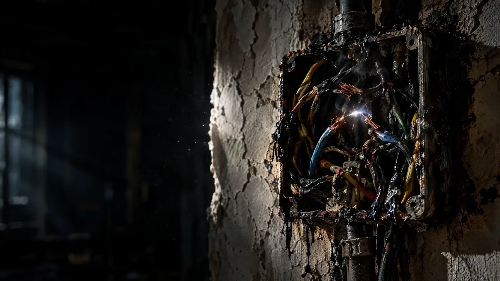
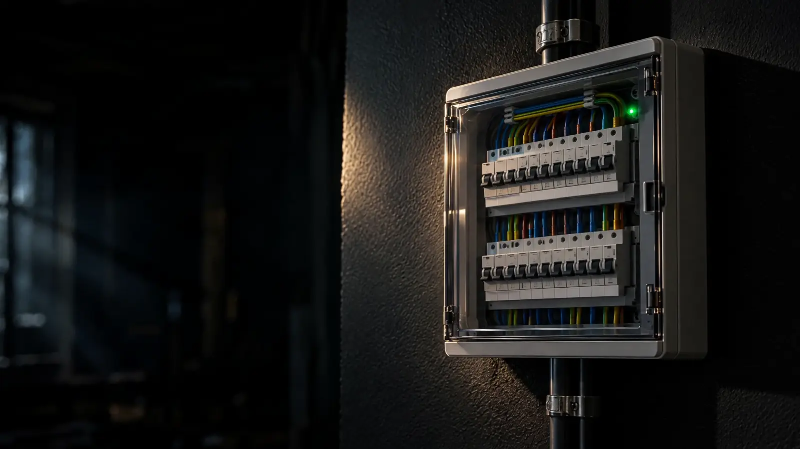
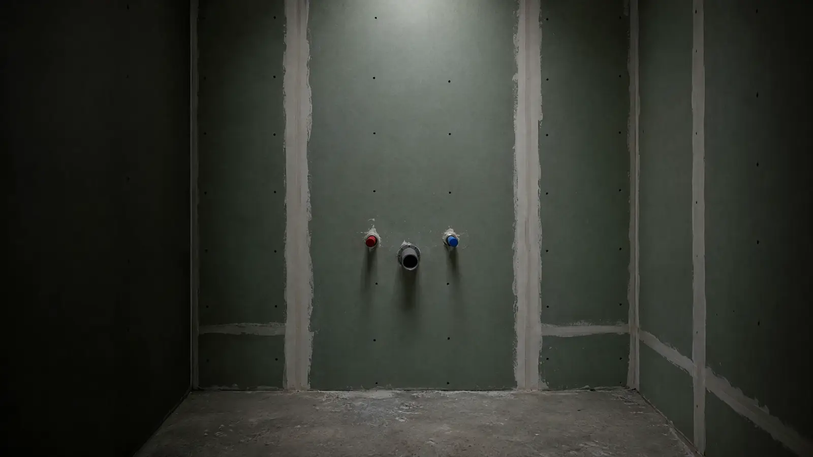
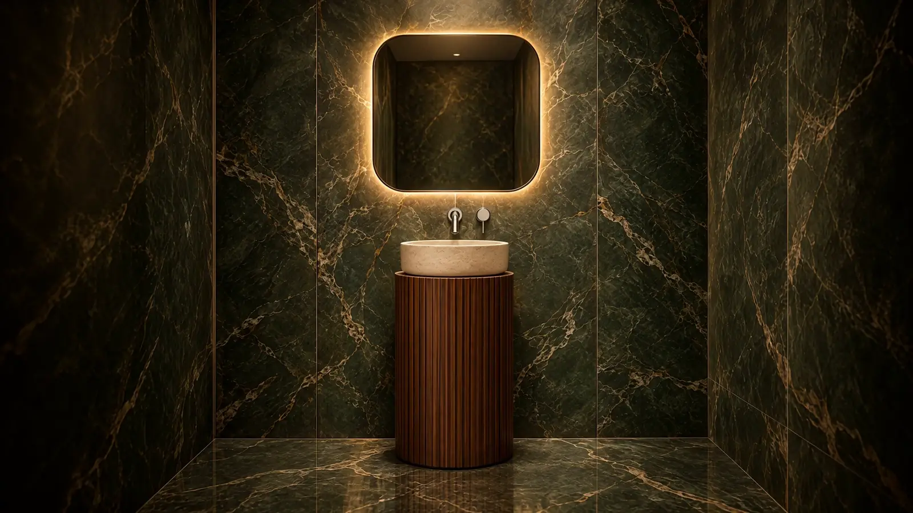
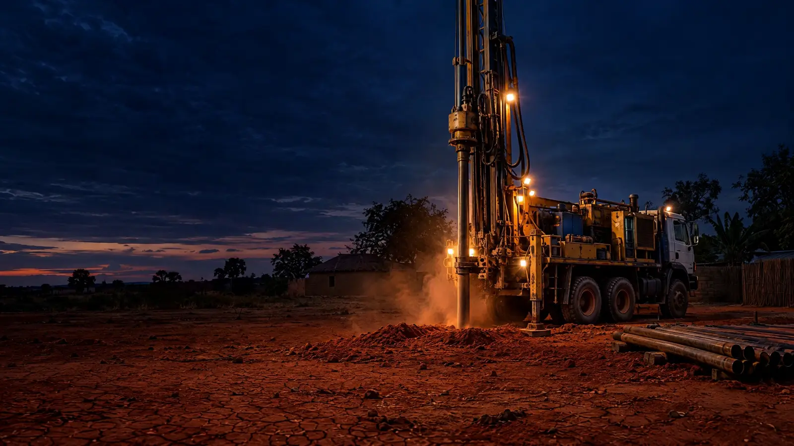
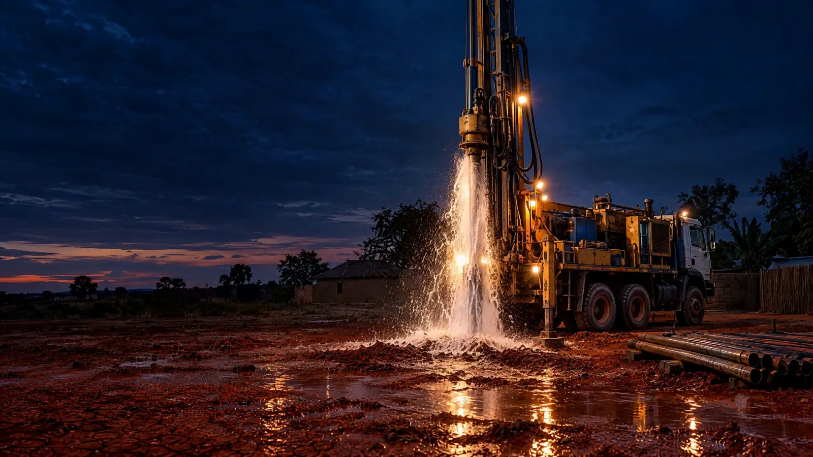

Avant / après
Glissez pour voir la différence.
Faites glisser le curseur sur chaque image pour comparer l’état avant et après l’intervention.
AvantAprès‹ ›


AvantAprès‹ ›

AvantAprès‹ ›

AvantAprès‹ ›Visuels d’illustration. Remplacez-les par les photos de vos propres chantiers (dossier assets/img, même nom de fichier).
Une fuite, une panne ou un projet de forage ?
Appelez ou écrivez sur WhatsApp. On vous répond, on se déplace et on vous remet un devis clair avant de commencer.